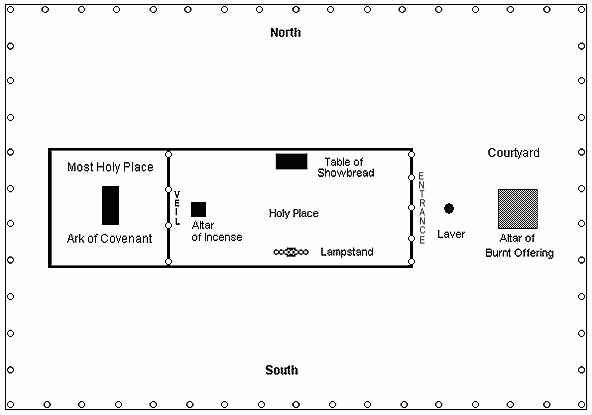

THE KEY OF THE HOUSE OF DAVID
The first mention of the key of the house of David is found in the book of Isaiah, in a description of the duties of Eliakim, the royal chamberlain of King Hezekiah of Judah:
Isa 22:20 And it shall come to pass in that day, that I will call my servant Eliakim the son of Hilkiah:
Isa 22:21 And I will clothe him with thy robe, and strengthen him with thy girdle, and I will commit thy government into his hand: and he shall be a father to the inhabitants of Jerusalem, and to the house of Judah.
Isa 22:22 And the key of the house of David will I lay upon his shoulder; so he shall open, and none shall shut; and he shall shut, and none shall open.
The key of the house of David is upon his shoulder? What does that mean? Let Isaiah explain. Speaking about Jesus, Isaiah says:
Isa 9:6 For unto us a child is born, unto us a son is given: and the government shall be upon his shoulder: and his name shall be called Wonderful, Counsellor, The mighty God, The everlasting Father, The Prince of Peace.
Isa 9:7 Of the increase of his government and peace there shall be no end, upon the throne of David, and upon his kingdom, to order it, and to establish it with judgment and with justice from henceforth even for ever. The zeal of the LORD of hosts will perform this.
The key of the house of David is symbolic for the government of Eliakim in Isaiah 22 (v.21), which is a type or symbol of the government of Jesus Christ as described in Isaiah 9. Note also that according to Isaiah, the government or kingdom of Jesus Christ is established, or founded, on a work of judgment. This is an important aspect of the key of the house of David, which will be explained.
The key of the house of David, possessed by Jesus, opens two important doors. John the Revelator sees the first door opened in chapter 4:
Rev 4:1 After this I looked, and, behold, a door was opened in heaven: and the first voice which I heard was as it were of a trumpet talking with me; which said, Come up hither, and I will show thee things which must be hereafter.
Rev 4:2 And immediately I was in the spirit; and, behold, a throne was set in heaven, and one sat on the throne.

TABERNACLE OF MOSES
In the traveling Tabernacle of Moses, there were two "doors". Through the first door was the Holy Place, the first apartment.This is the door opened first chronologically in Revelation 4:1, in the heavenly Tabernacle, with the key of David. The scene that John sees in heaven after the door is opened, is a throne room:
In this scene, the one on the throne is God the Father, and the Lamb as it had been slain is Jesus, returning to His Father from His crucifixion. There is a book or scroll with seven seals which only Jesus as the slain Lamb can open, and the seals are opened in sequence from Rev. 6:1 to 8:1. Christ as the sacrificed Lamb is the only one qualified to receive the title deed to the Kingdom, containing the names of all the saved, the Lamb's book of life. The type of this in the Old Testament is the kinsman redeemer Boaz, who by purchasing the land of Naomi, also took Ruth as his wife. Jesus is our kinsman redeemer, who by His sacrifice bought back ownership of the earth, which Adam had forfeited to Satan at the fall. By this, Jesus also takes those faithful believer's He has redeemed as His bride, restoring to them their inheritance.Rev 5:6 And I beheld, and, lo, in the midst of the throne and of the four beasts, and in the midst of the elders, stood a Lamb as it had been slain, having seven horns and seven eyes, which are the seven Spirits of God sent forth into all the earth.
Rev 5:7 And he came and took the book out of the right hand of him that sat upon the throne.
...
Rev 5:11 And I beheld, and I heard the voice of many angels round about the throne and the beasts and the elders: and the number of them was ten thousand times ten thousand, and thousands of thousands;
Psalms 37:22 (KJV) For such as be blessed of him shall inherit the earth; and they that be cursed of him shall be cut off.
THE SEVEN CHURCHES
In Revelation, we find letters to seven churches in Asia Minor. These seven churches, while they were literal congregations, they are also understood to be a description of a spectrum of seven conditions any church can find itself in. They are also considered symbolic for seven consecutive periods of time, from the Apostolic church to the time of the second coming as follows:
The church of Philadelphia, very near the end of time, has another door opened for it:Ephesus ("desirable"), Rev. 2:1-7 — The Apostolic church of the 1st century.
Smyrna ("sweet smelling"), Rev. 2:8-11 — Persecuted by Ancient Pagan Rome.
Pergamos ("elevated by marriage"), Rev. 2:12-17 — Apostate church-state union.
Thyatira ("sacrifice of contrition"), Rev. 2:18-29 — The church of the middle ages.
Sardis ("escape of the remnant"), Rev. 3:1-6 — The Reformation era.
Philadelphia ("brotherly love"), Rev. 3:7-13 — The early 19th century to 1844.
Laodicea ("a people judged"), Rev. 3:14-19 — From 1844 to the second coming.From Strong's Concordance:
- G2993. Laodikeia, lah-od-ik'-i-ah; from a comp. of G2992 and G1349; Laodicia, a place in Asia Minor:--Laodicea.
- G2992. laos, lah-os'; appar. a prim. word; a people (in gen.; thus differing from G1218, which denotes one's own populace):--people.
- G1349. dike, dee'-kay; prob. from G1166; right (as self-evident), i.e. justice (the principle, a decision, or its execution):--judgment, punish, vengeance. [The word dike is used in Acts 25:15, Acts 28:4, 2 Thess 1:9, and Jude 1:7.]
Rev 3:7 (KJV) And to the angel of the church in Philadelphia write; These things saith he that is holy, he that is true, he that hath the key of David, he that openeth, and no man shutteth; and shutteth, and no man openeth;
Rev 3:8 (KJV) I know thy works: behold, I have set before thee an open door, and no man can shut it: for thou hast a little strength, and hast kept my word, and hast not denied my name.
This door is the second, the
veil or door from the Holy Place into the Most Holy. On
the Day of
Atonement the high priest entered the Most Holy apartment of the
Sanctuary or Temple, which was symbolic of the judgment of God's
people. In the Most Holy was the Ark of the Covenant, containing the
standard of judgment, the Ten Commandments of God (Exo. 20:2-17). The last of the seven churches is
called Laodicea "a people judged" because they are living in the time
of the judgment. This event is also described in
Daniel:
Dan 7:9 I beheld till the thrones were
cast down[set in place], and the Ancient of days [God the Father] did sit, whose garment was white as snow, and the hair of his head like the pure wool: his throne was like the fiery flame, and his wheels as burning fire.
Dan 7:10 A fiery stream issued and came forth from before him: thousand thousands ministered unto him, and ten thousand times ten thousand stood before him: the judgment was set, and the books were opened.
The books being opened in the judgment are the evidence, to include the Lamb's book of life (Rev. 3:5), which is Christ's last will and testament:
Heb 9:15 And for this cause he [Christ] is the mediator of the new testament, that by means of death, for the redemption of the transgressions that were under the first testament, they which are called might receive the promise of eternal inheritance.
Heb 9:16 For where a testament is, there must also of necessity be the death of the testator.
Heb 9:17 For a testament is of force after men are dead: otherwise it is of no strength at all while the testator liveth.
In the ancient world, a will (Praetorian Testament) was sealed with the seals of seven witnesses to attest to the validity of the will (see A Dictionary of Greek and Roman Antiquities edited by William Smith, D.C.L., LL.D., published by John Murray, London, 1875, entry on Testamentum) The seven seals represent seven consecutive periods of time from creation to the second coming, the whole span of human existence. Those being judged are the professed people of God, those who claim to be the heirs of Christ, the rightful inheritors of eternal life:
1 Pet 4:17 For the time is come that judgment must begin at the house of God: and if it first begin at us, what shall the end be of them that obey not the gospel of God?
Mat 19:29 And every one that hath forsaken houses, or brethren, or sisters, or father, or mother, or wife, or children, or lands, for my name's sake, shall receive an hundredfold, and shall inherit everlasting life.
Notice what is given to Jesus at the conclusion of this initial phase of the judgment, known as the Pre-advent Investigative Judgment:
So, just as Isaiah said, the government of Jesus, the Kingdom of God, begins with judgment. The key of the house of David opens the two doors into the Most Holy place of the sanctuary, the Temple in heaven, to begin the Pre-advent Investigative Judgment of God's people.Dan 7:13 I saw in the night visions, and, behold, one like the Son of man [Jesus] came with the clouds of heaven, and came to the Ancient of days, and they brought him near before him.
Dan 7:14 And there was given him dominion, and glory, and a kingdom, that all people, nations, and languages, should serve him: his dominion is an everlasting dominion, which shall not pass away, and his kingdom that which shall not be destroyed.
Psa 122:1 A Song of degrees of David. I was glad when they said unto me, Let us go into the house of the LORD.This second door into the Most Holy Place does not remain open indefinitely:
...
Psa 122:5 For there are set thrones of judgment, the thrones of the house of David.
Rev 15:8 And the temple was filled with smoke from the glory of God, and from his power; and no man was able to enter into the temple, till the seven plagues of the seven angels were fulfilled.
At the conclusion of the pre-advent judgment, the door into the Most Holy place is effectively closed, and probation has ended for all men. With the seven last plagues falling on the wicked, Jesus' role as the high priest ends, and he changes into His royal garments and returns to Earth as the King of Kings and Lord of Lords (Rev. 19:16).
The Hebrew Sanctuary - The Illustrated Plan of Salvation
 http://biblelight.net |